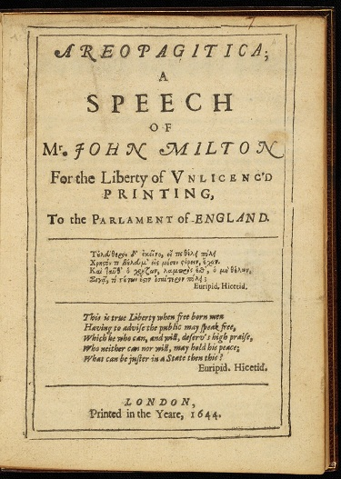

Abstract
Print-on-demand (POD) versions of out-of-copyright literary editions have recently flooded the digital marketplace, dragging the editorial work of the eighteenth and nineteenth centuries back into circulation. Often assembled by software as facsimile publications or OCR "plain text" editions, then printed and delivered before the text is seen by human eyes, these POD books are altering how the material weight of the past bears on the present. Through a case study of Milton's Areopagitica, this essay explores how POD's zombie-like revitalization of earlier texts challenges us to broaden our understanding of the nature of digital textuality, especially as it pertains to the work of electronic editing.
If a history of readings is made possible only by a comparative history of books, it is equally true that a history of books will have no point if it fails to account for the meanings they later come to make. — D. F. McKenzie, [McKenzie 1999, 14]
Pre-existing objects [can be] more loaded than the new and innocent, and hence potentially more powerful when dimensions of relationality that are virtual to them (but that perhaps remain hidden) are brought to the fore or potentiated. — Matthew Fuller, [Fuller 2005, 3]
Anyone searching Amazon.com for a print edition of John Milton's
Areopagitica is likely to encounter
English Reprints Jhon Milton Areopagitica (see Figure 1).
Figure 1. Cover of English Reprints Jhon Milton Areopagitica, a print-on-demand copy of Milton's Areopagitica (BiblioLife, 2011).
This is a print-on-demand facsimile book —
potential book, rather, since at this stage it exists only as metadata in Amazon.com's database. Produced by BiblioLife, a software company that describes its mission as "breath[ing] new life into historic books," this unusual "e-book" has been assembled by software that searches websites like Project Gutenberg and the Internet Archive for out-of-copyright literature, then reformats found digital files for print publication. The reader's one-click electronic purchase sets in motion a print-on-demand (POD) process that will transform this digital assemblage into a gathered and glued paperback, sent directly to her stoop. From letterpress-printed paper to celluloid film to metadata-encrusted digital scan to database entry and back to paper,
English Reprints Jhon Milton Areopagitica is a Frankenstein of mediated ma
terialities, stitched together by software and revitalized from skeleton metadata back to bookish existence.
To borrow a vocabulary recently developed by Jussi Parikka and Tony Sampson, this POD Milton and its ilk are
anomalous objects,
a kind of "digital pollution" flooding our ostensibly "noiseless and friction-free" networks [
Parikka and Sampson 2009, 3]. Indeed, the string "English Reprints Jhon Milton Areopagitica" reads more like the subject line of spam than a book title, and both it and the strangely incongruous stock cover photo mark the text as cheap, adulterated or untrustworthy. Yet, as Parikka and Sampson p
oint out in relation to junk mail and computer viruses, artifacts that seem to skirt the peripheries of the average user's experience in fact occupy a central position within the digital marketplace, exposing the processes of mediation and communication circuits upon which network capitalism depends. In light
of the fact that this book's publisher, BiblioLife, provided 272,930 print-on-demand titles in 2009 alone, and is now partnered with the British Library, ProQuest and Gale-Cengage to publish many tens of thousands more, it is perhaps no stretch to argue that these seemingly anomalous objects epitomize an e-publishing model that is radically transforming how our literary heritage is
reproduced and re-circulated.
Thus far, the fields of digital humanities in general, and electronic editing in particular, have not adequately addressed the consequences of these POD publications for the present and future of a digitally-inflected literary studies. This oversight may be due to the fact that POD books are artifacts of print: we access them through paper and ink, not screens, and store them on shelves, not hard drives. However, as I point out above and explore in more detail below, English Reprints Jhon Milton Areopagitica is a thoroughly digital object, produced from electronic information gathered by software searching enormous databases. Only once a reader purchases a POD reprint (usually through the web) is the formal materiality of the electronic text actualized in paper, and even then the book's pages show traces of these digital processes. Understanding how these print/digital hybrids remediate and re-circulate out-of-copyright scholarly editions has as much import for digital textual studies as the transition from print-based to electronic editions; for their anomalous presence within the literary marketplace shifts the material weight and cultural significance of the past in our present moment. Through a case study of POD Areopagiticas — read along the grain of the text's pre-electronic publishing history — this essay sketches out some of the ways in which these digital reprints are redrawing the boundaries between books, facsimiles, electronic files and databases and, in the process, reconfiguring relationships between readers, authors and editors, both living and dead.
* * *
The question of how electronic media would and could transform textual editing was one of the earliest taken up within digital humanities [
Price 2007], and the literature within the field is comparatively bulky (e.g. see [
McCarty 2010]; [
Burnard et al. 2006]; [
Bryant 2002]; [
McGann 2001]; [
McGann 1991]; [
Shillingsburg 1996a]; [
Shillingsburg 1996b]; [
Smith 2004]; [
Price 2007]). This early foray is not surprising. For almost a century before the formation of a discipline that could coherently be called "digital humanities," librarians and textual scholars hotly debated the impact of microfilm on the future of scholarly editing, arguing both its "unlimited possibilities" and "limitations" in terms strikingly similar to those used in the last two decades ([
McCombs 1920, 4]; [
Jackson 1941, 281]; for a critical overview of these debates, see [
Tanselle 1998]). Even before microfilm entered libraries, printed facsimiles like John Payne Collier's 1858 photolithographic reproduction of the first quarto of
Hamlet and Sidney Lee's 1902 collotype of Shakespeare's first folio (to name just two examples) exploited then cutting-edge technologies to disseminate remediated forms of rare books to a broader audience. Not only do these projects constitute a "prehistory for the many digitization enterprises currently underway in the digital humanities" [
Galey 2009, 1], as Alan Galey points out in a forthcoming book on the topic, they also, as Joseph Loewenstein has argued, helped to form the field of New Bibliography, which both depended on
and defined itself in opposition to new technologies of reproduction [
Loewenstein 2002, 259-260]. For even as photography helped far-flung bibliographers collaborate on collating versions, it also threatened to disrupt the field with forgeries and even devalue the work of bibliography itself.
As with discussions of electronic editing today, these early debates pivoted around the question of documentary evidence: that is, could reproductions be used to prove bibliographic facts about the object reproduced? How far do we extend the status of "facsimiles" — only to exact reproductions printed on handmade paper using period ink? Or might transcriptions or approximate visual representations reasonably duplicate a text? A field's answer to these questions reveals much about its investment in and conceptualization of the materiality of media objects, and it is telling that these remain among the most vexed issues in digital textual studies. In fact, Alan Galey points out that digital humanists are now in the same position New Bibliographers once were [Galey 2010, 101] — a statement implying a return to earlier moments of technological upheaval but also indicating that certain foundational tensions have not been, and perhaps never will be, resolved. Galey frames the problem succinctly:
it should be disquieting to see a deepening separation of material form from idealized content in our tools at the very moment when literary critics have established the materiality of texts to be indispensable to interpretation. As digital textual studies takes shape as a field, it finds itself caught between these divergent trends in computational practice and literary theory. [Galey 2010, 94]
Ironically, or perhaps appropriately, the collection of essays in which Galey's statement appears typifies this divide.
In Areopagitica — a polemical tract published in response to the Licensing Order of 1643, which required that all printed books be registered and licensed by the state — Milton engages the question of textual materiality with a rigor perhaps unparalleled by his contemporaries. Exploring the formation and afterlives of his theory of mediation helps us trace how readers, authors and editors began distinguishing the physical form of texts from idealized content. By more deeply (if roughly, for the purposes of this paper) historicizing this split, we will be in a better position to understand the historically-mediated materiality of POD Areopagiticas, as well as the various ways these anomalous objects dislodge our assumptions about electronic textuality.
First, though, one must recognize Milton's tract as presenting a theory of mediation. Until recently ([
Dobranski 1999]; [
Fulton 2010]; [
Norbrook 1994]; [
Rovira 2005]), interpretive readings of
Areopagitica have been locked in a debate about the degree of liberalism or conservativism Milton advocates in the censorship of books, with Stanley Fish's reader-response-oriented reading dominating the critical discourse ([
Fish 2001]; on this debate, see [
Kolbrener 1997, 1-7]). While much of this work has constructively problematized the tract's politics, it is important to emphasize that, for Milton, books (including his own) are not passive containers for disseminating political ideas but, as he writes in a well-known passage,
doe contain a potencie of life in them to be as active as that soule was whose progeny they are; nay they do preserve as in a violl the purest efficacie and extraction of that living intellect that bred them. I know they are as lively, and as vigorously productive, as those fabulous Dragons teeth; and being sown up and down, may chance to spring up armed men. [Milton 1644, 4]
This imagery of books as "vigorously productive" pervades Areopagitica. Books are not inanimate structures housing docile thoughts, like a building where "5
Imprimaturs are seen together dialogue-wise in the Piatza of one Title page, complementing and ducking to each other with their shav'n reverences" [
Milton 1644, 8]. Rather, books are drugs, meats and minerals [
Milton 1644, 15, 11, 14-5] — entities that seem inert but, once brought into and absorbed by the reader, transform her body and mind. They are born into the world like children, the "issue of the brain" of their author-parent [
Milton 1644, 9]; a vital spark of truth animates their physical form in the same way that life imbues flesh, transforming a configuration of matter into a lively, experiencing agent that acts in and on the world.
Put anachronistically, in terms recently developed by Jane Bennett, books for Milton
bear a
vital materiality,
a kind of "thing-power" that interacts with a living assemblage of humans, ideas, institutions and objects [
Bennett 2010, 2-17].
At times, Milton indicates that these encounters between books and their audiences are less transformative for readers than for the books themselves. If a wise man "can gather gold out of the drossiest volume" and "a fool will be a fool with the best book, yea or without book," Milton writes — in an argument which one might easily read today in response to media effects research on, say, violence in video games — "there is no reason that we should deprive a wise man of any advantage to his wisdome, while we seek to restrain from a fool, that which being restrain'd will be no hindrance to his folly" [
Milton 1644, 14-5]. At the same time the book cannot influence the fool, the raw minerals of texts can, by coming into contact with virtuous readers, be shaped into "usefull drugs and materialls wherewith to temper and compose effective and strong med'cins" [
Milton 1644, 15]. Thus, as Lana Cable astutely points out, "the materials of reading and writing in
Areopagitica reach infinitely beyond such accidental effects as books, pen and paper" to encompass "the entire spectrum of sensory experience" and in doing so "brea[k] down the barriers between ideas and their manifestations, between words and things" [
Cable 1995, 136].
There are reasons why Milton, arguing against licensing, would want to theorize books as more than their accidental effects. If truth inheres in ink marks on paper, then destroying books obstructs our ability to access truth — or, conversely, preserving books is tantamount to preserving truth. In such a world, state licensing becomes a valid and even successful means of policing (and maintaining) truthful thought. By contrast, if some vital spark inheres in books, then the physical particularity of each book-qua-object loses its potency, as do, importantly, the imprimatur marks of the licensers. Thus the material manipulation of the book — for instance, through censorship — can neither harm nor (more interestingly) preserve the ideas contained therein. Milton underscores the subtleties of this distinction by pointing out that truth is not a "staple commodity" to be "mark[ed] and licenc[ed] ... like our broad cloath, and our wooll packs" [
Milton 1644, 23] but rather (drawing on a well-known Biblical image) resembles a "streaming fountain; if her waters flow not in perpetuall progression, they sick'n into a muddy pool of conformity and tradition" [
Milton 1644, 26]. A fountain is a material entity, but its ability to be known as such depends upon its constant animation, the incessant transformation of its physical structure; for of course a static fountain is not a fountain at all, but a pool. Destroying, censoring or archiving the material form of books may reconfigure the flow of truth through social assemblages, but cannot stop the fountain. Therefore, Milton concludes, licensing is not only a political and cultural evil; it is also simply ineffective.
This more nuanced understanding of Milton's vital materialist theory of mediation helps us better understand what Milton is
not saying. First,
Areopagitica does not conceptualize textuality as something like Peter Shillingsburg's notion of "the work implied," whereby "the work is not equivalent to any material representation of it, but is (partially and particularly) represented by each version of it" [
Shillingsburg 2010, 171]. As I point out below, this distinction between an immaterial text and its many material incarnations developed in the century after
Areopagitica was first published, and is a byproduct of developments in the history of the book and editing that will eventually bring us to the POD reprint
English Reprints Jhon Milton Areopagitica. Moreover, contrary to D. F. McKenzie's interpretation,
Areopagitica does not intentionally conceptualize books as giving "transparent access to the essential meaning" [
McKenzie 1999, 32]. Nor does Milton's language necessarily "heighten the idea of enclosure, of the text as contained, determined, stable, of the author within, both clearly visible and enduringly present" [
McKenzie 1999, 31]. Although Milton does, as McKenzie points out, write within a tradition in which books can express truth, even sacred truth, he does not thereby neglect the
active role that
authors, printers and even readers take in constructing that truth. Indeed, the question of how coherent meaning can emerge from singular acts of reading, experienced by individuals distinct in time and place, is at the heart
of Areopagitica.

Figure 2. Title page of Milton's Areopagitica (London, 1644). Digital image from the Bridwell Library, Southern Methodist University.
Nowhere is Milton's awareness of authorial agency more evident than in the visual design of his own tract. As Abbe Blum points out, the title page contains no licenser's name or imprimatur, no bookseller's or printer's names, nor indeed any identifying device — all absences that defy the 1643 Licensing Order against which the tract argues (see Figure 2). Replacing these markers of parliamentary authority, Milton's name looms unusually large, as large as the tract's title and larger than its address "To the PARLAMENT of
ENGLAND." Indeed, the only element larger than Milton's name is the word "S
P E E C H," a term that further draws attention to the highly mediated nature of this
printed utterance, this "speech" never spoken. Thus the formatting of the tract embodies the shifts in discursive power for which Milton argues in the main text [
Blum 1988, 82] and, correspondingly, exemplifies the book's ability to intervene actively in producing historical change. By failing to read Milton's quote in its material context, McKenzie falls prey to the same misreading he brilliantly pinpoints in Wimsatt and Beardsley's interpretation
of Congreve.
While
Areopagitica failed in its immediate political goal — to end the Licensing Order — its afterlife in the seventeenth century exemplifies Milton's own theory of the animating power of books to transform social assemblages. When the Licensing of the Press Act of 1662 was allowed to expire in 1679, pamphleteers once more debated the role and effectiveness of state licensing. Turning to
Areopagitica for inspiration, both William Denton in "An Apology for the Liberty of the Press," appended to his
Jus Caesaris et ecclesiae vere dictae (1681), and Charles Blount writing as "Philopatris" in
A Just Vindication of Learning (1679) adapted Milton's arguments, with Blount (in true Miltonic form) lifting entire passages to pad his own writing. When the Licensing Act was renewed
in 1685, Blount again borrowed from
Areopagitica in his
Reasons Humbly offered for the Liberty of Unlicensed Printing (1693), which does not list Blount as its author but instead "a Gentleman from the Country." Blount signs this anonymous work with the initials "J.M.," a nod to his muse, John Milton (see Figure 3).
[1]
Figure 3. Blount's "signature" in the anonymous pamphlet Reasons Humbly offered... (London, 1693). Image from Early English Books Online.
The Licensing Act expired again in 1695, and the ensuing debates over censorship and the ownership of texts resulted in the 1710 Statute of Anne, widely considered the first English copyright law ([
Rose 1993, 36]; [
Loewenstein 2002, 14]). Thus although
Areopagitica itself failed to end licensing in 1644, its argument subsequently succeeds (at least in regards to licensing) through Denton and the creative pilfering of Blount ([
Sensabaugh 1946, 169]; [
Martin 2010, 125]), a man later described by one of Milton's editors as he "to whom, above all others, we owe the abolition of the Licensing Laws" [
Osborn 1873, 4]. Ironically, as a result of the intellectual property laws that came
out of seventeenth-century licensing acts, Blount's textual appropriation — perhaps an early example of what Henry Jenkins terms "textual poaching" [
Jenkins 1992] — would today be considered plagiarism.
When a posthumous collection of Blount's
Miscellaneous Works, including
A Just Vindication, appeared in 1695, Blount's playful pseudonyms were absent, replaced by "
Charles Blount, Esq." Through this act of gathering and reprinting Blount's works within a single volume, the
Areopagitica passages appropriated by "Philopatris" silently become the property of the newly-constructed author, Charles Blount, Esq., and the genetic lineage of Milton's text — its animating ideas — merges indistinguishably with that of Blount (see Figure 4).
Figure 4. Table of contents for The Miscellaneous Works of Charles Blount, Esq. (1695). Image from Early English Books Online.
Three years later, the scattered limbs of Milton's prose works would themselves be gathered and repackaged in the
Complete Collection of the Historical, Political, and Miscellaneous Works of John Milton, Both Latin and English, edited by John Toland (1698) [
Toland 1698]. As part
of his project
of transforming culturally fluid texts into the product of a single individual, Toland appended to his collection a biography of the author in which claims of Milton's nonconformism sparked a flurry of competing "revised" and "revisited" biographies that continue to haunt Milton scholarship today. Thus much like the construction of "Charles Blount, Esq." from a gathering of pseudonymous pamphlets, Toland's edition compresses a multiplicity of publishing events, spread across several decades, into a one-off publication stitched together by both the homogenizing appearance of print and the authorial myth that Toland himself produces in the appended biography. By containing ephemeral tracts in a single collection, succeeded by a formidable portrait of Milton himself, Toland also constructs an image of the completeness of Milton's prose, setting a standard for editions of Milton that would last throughout the eighteenth and well into the nineteenth centuries [
Martin 2010, 113].
If the vitalist materiality set forth by
Areopagitica presents books as the living progeny of their author, editions such as Toland's turn the author into Arcimboldo's
Librarian, a figure devised from its own books. This Frankenstein Milton — come to life through the sheer formal agglomeration of textual artifacts — looms large in the eighteenth century, with
Areopagitica often put forth as representative of the liberal Miltonic mind. For instance, when the Toland edition was republished in 1738, the printer Andrew Millar pre-circulated a reprint of
Areopagitica to advertise the forthcoming collection. By the time Francis Blackburne published his
Remarks on Johnson's Life of Milton in 1780, the myth of Milton was ensconced in, and inextricable from, the very process of textual scholarship which, Arcimboldo-like, brought the author-qua-individual into existence. In fact, Blackburne appends to his own refutation of Johnson's reinterpretation of Milton a "new and accurate" edition of
Areopagitica to show the "contrast between the magnanimity of Milton, in facing a formidable enemy, and Dr. Johnson's see-saw meditations" [
Blackburne 1780, vi]. Thus in a circuitous scholarly logic worthy of Pope's
Dunciad,
Areopagitica is
posthumously called as a character witness to defend an image of authorship that the work itself, emphasizing the agency of the reader in producing meaning, does not recognize.
In the line from Blount's creative borrowing to Blackburne's scholarship, the "text" of
Areopagitica undergoes a subtle shift. For Blount,
Areopagitica is animate with ideas, tentacles of meaning that squirm beyond the boundaries of the printed page, beyond the reproduction of what Jerome McGann calls the "linguistic text." Milton's text matters to Blount because it inspires, breathing life into his own political actions. A century later, Blackburne's
Areopagitica had solidified into a block of printed words with a stable beginning and end, as well as a known and knowable position within Milton's oeuvre. Far from creatively appropriating Milton's ideas, Blackburne tacks the entire essay to the end of his own, thereby absorbing
Areopagitica into his book not as a flexible Barthesian text but as a closed linguistic system, the dead letter of Miltonic scripture. Blount is faithful to ideas; Blackburne, to the words transmitted on the page. While these differences between Blount and Blackburne signal well-documented cultural transformations in attitudes toward criticism, editing, authorship and intellectual property (see e.g. [
Loewenstein 2002]; [
Rose 1993]; [
Walsh 1997]), they also point to the emergence of a new notion: that textuality —
information — inhabits and yet is distinct from its own material instantiation. Here, then, is one origin of Shillingsburg's "the work implied" [
Shillingsburg 2010, 17]. By the time Blackburne is able to promise a "new and accurate edition," a gap is yawning between form and content, between
Areopagitica as a book, a vital thing circulating socially, and its status as intangible property defined as a string of linguistic data.
That
written words could be conceived of as immaterial data, separate from the paper, walls, rings and tapestries on which they appear, seems to have been a strange concept to sixteenth- and early seventeenth-century writers ([
de Grazia 2000]; [
Fleming 2001]; [
Frye 2010]), perhaps — given our reading of
Areopagitica above — to Milton himself. Yet by the end of the eighteenth century, it had become commonplace, and had stimulated a flurry of literary editing that increasingly stripped the immutable work away from its material past. The long, fascinating history of scholarly editing is beyond the scope of this essay (see instead [
Hunter 2007]; [
Small and Walsh 1991]); however, many recent studies have documented its importance to the canonizing of major authors such as Chaucer [
Matthews 2000] and Shakespeare [
Walsh 1997], as well as lesser figures like Samuel Pepys [
Foys and Trettien 2010]. It is far from radical to suggest that humanities scholarship as we know it today emerged alongside and partly depends upon this machinery of scholarly editions, and that this apparatus is itself tied to print and other technologies of mass reproduction. While the fields of book history and media studies (building on earlier work in bibliography) have reinvigorated an interest in the history of this apparatus and the materiality of texts more generally, the notion of textuality as dematerialized information continues to trouble literary scholarship (as Galey, quoted above, points out). Digital media, sometimes presented as bridging the content/form divide, have
only further vexed the question of textuality by facilitating,
on the one hand, analytic mechanisms that depend on plain text searching (text as content) and, on the other hand, a new view of the book's materiality through multimedia formats (text as form). The mushrooming set of standards devised to deal with this split is evident in the submission guidelines to this very (born-digital) journal (see Figure 5).
Figure 5. Submission guidelines for Digital Humanities Quarterly, accessed 28 August 2012.
If the textual transformations of Blackburne foreshadow the standardization of electronic texts in contemporary scholarship, nineteenth-century reprints of Areopagitica bring us to English Reprints Jhon Milton Areopagitica and POD digital publishing. Compared to the former narrative of scholarly editing — leading, as it does, to the emergence of a canon populated by dematerialized texts — the latter history of popular reprinting is lesser known and rarely discussed, even within the field of book history. This neglect is due in part to a general distrust of reprints among literary scholars, since reprints are (ostensibly) just that, reprints, unmediated by the intellectual labor of editing. Yet tracing the fault line that separates canonical (and therefore acceptable) Milton from a (monstrous) POD reprint gives us a better perspective from which to understand our own historically-constructed assumptions about plain text and facsimile image, printed book and electronic file. I turn now to this alternative history before concluding with some remarks on electronic editing.
* * *
A century after Thomas Newton's magisterially annotated editions of Milton's poetry began appearing, Edward Arber — a clerk in the Admiralty who had taken night classes at King's College, London — began publishing a series of classic literature he called "English Reprints." These reprints were produced as low-cost, high-volume editions "designed to place the Masterpieces and the minor works of our mighty Past, in their original dress, within the easy reach of every reader of the English tongue" (quoted in [
Myers 2006]). While the populist tone of this statement is evident, and common in nineteenth-century reprint series ([
McGill 2003]; [
Howsam 2009]), note the stress placed on the book's material form: Arber sees his task as not, or at least not only, disseminating
knowledge — that "breath of reason" contained in texts — but physical objects "in their
original dress" and "within easy
reach" of readers (emphasis added). He wants to, as he writes in the introduction to his
Areopagitica reprint, "bring this modern age
face to face with the works of our forefathers" [
Arber 1869, 4, emphasis added]:
The Editor and his clumsy framework are unimportant and may be forgotten; if but that the attention may be riveted upon the picture. The thought of these English Writers is not dead. It slumbers. Understand and then subtract from it, the local colouring of time and circumstance, and it is instinct with life: either the noxious life of foul delusive error, or the ethereal life of Truth. [Arber 1869, 4]
The prominence of the physical object here draws this statement taut with contradictions. On the one hand, Arber wants readers to rivet their attention upon "the picture" of the reprint, noting the skin of history evident on the page; on the other, he asks that they "subtract ... the local colouring of time and circumstance" to identify the text's quintessence, the slumbering "thought" of its author. While the latter statement gestures at the vitalist materiality of books outlined in
Areopagitica, the visual design of the "English Reprints" series emphasizes the former — in fact, is contrived to emphasize the former through artificially "Ye Olde English"-ish black gothic lettering, decorative flourishes, and use of the long 's' (see Figures 6 and 7).
Figure 6. Title page for Areopagitica, edited by Edward Arber (London, 1869). Duke University copy.
Figure 7. Contents and first page of Areopagitica, edited by Edward Arber (London, 1869). Duke University copy.
Though Arber aims to put readers "face to face" with the book's "original dress," his "English Reprints"
Areopagitica in fact presents a rough reconstruction of what the nineteenth century popularly imagined seventeenth-century typography to look like. This attitude toward a text's material history
ironically traps the reader in the present, since the past she faces on the page is thereby always a function of a contemporary editor's projections into and onto "earlier times." If media are, as Lisa Gitelman eloquently puts it, "reflexive historical subjects" [
Gitelman 2008, 20], these projections are themselves both backward- and forward-looking. While surviving copies of the 1644
Areopagitica remained safely embalmed in libraries, Arber's speculative model of seventeenth-century textuality continued to circulate as one of the nineteenth-century's primary material experiences of its own national past, thereby reinforcing the image it constructs while, more interestingly, accumulating its own accidental histories. For instance, although I cannot leave the rare book room with a rumpled copy of Milton's 1644 tract in my bag, I can, and have, checked Arber's 1869 copy out of my university's library, where it — unlike nineteenth-century editions of more scholarly import — was shelved in the open stacks. Arber's intentional aging of this text is as difficult to locate historically now, in the twenty-first century, as the several hands of marginalia that crowd my university's copy (see Figure 8).
Figure 8. Marginalia in Duke University's copy of Areopagitica, edited by Edward Arber (London, 1869).
In these annotations, the temporal line of history lays flat, scattered across the two dimensions of the page; whatever meaning these marks once made is now opaque, only brought back into visibility through an interpretative critical process. Indeed, this single copy mediates my entire reading of Arber's "English Reprint" series, since I can only ever experience the book through its
antiquated materiality — that is, both its intentionally aged design
and the dusty handwriting on this particular copy.
Thus even as eighteenth- and nineteenth-century scholarly editions aimed to modernize Milton, the reprint industry of Arber's Areopagitica churned out "Everyman" books made to sophisticate the shelves of middle-class English families [Howsam 2009, 20]. The former practice analyzed the artifacts of early printings in order to produce a clean, abstracted text, portable across multiple platforms; the latter emphasized the dissemination of texts, of ideas, while in fact focusing on the production of material objects. Put another way, scholarly editions began institutionalizing literature, recruiting texts into, and normalizing them according to, the emerging standards of academic research. Importantly, while electronic forms of communication are now forcing scholars to rethink the assumptions undergirding these standards, the discourse of digital humanities still largely operates within the terms set out in these Enlightenment-era projects, privileging a model of texts as information, as
data, and the use of digital technologies as tools to help clarify or interpret them. By contrast, popularizing reprints brought "the classics" closer to the average reader precisely by rendering them more materially
other than the nineteenth-century texts with which they circulated, an otherness made explicit when Arber's Milton sits alongside, for instance, Blackburne's. Although both scholarly editions and reprints fed (and continue to feed) on a rhetoric of accessibility, the latter's highly stylized design exposes the former's pretenses of presenting dematerialized (or "plain") text. It is precisely this mediated deformance of history — here, I am invoking McGann and Lisa Samuels [
McGann 2001, 105-130] — which illumines the historically constructed nature of textuality, as well as the technologically mediated
strangeness of all scholarly
editions.
If electronic editing traces its lineage to printed scholarly editions, this shadow history of popularizing reprints continues today with print-on-demand publishing. For most readers browsing Amazon.com, Arber's "English Reprints"
Areopagitica is most accessible as
English Reprints Jhon Milton Areopagitica, "by Edward Arber," the BiblioLife book that opens this essay. At the back of this POD reprint, the nineteenth-century advertisements for other works in the "English Reprints" series have been replaced with one for BiblioLife, underneath which is stamped the phrase "Old Books Deserve a New Life" (see Figure 9).
Figure 9. From the print-on-demand book English Reprints Jhon Milton Areopagitica (BiblioLife, 2011).
Whereas the typography, layout and overall design of Arber's 1869 edition are intentionally aged, this print-on-demand copy embodies a series of machine-generated accidents. Most glaringly, authorship is misattributed to Edward Arber, and the title mistakenly lumps together the name of the book, the name of the series and the name of "Jhon Milton," misspelled. More humorously, the cover sports a stock image of a maple leaf floating on water — the same image used on every BiblioLife book cover found online (see Figure 1). Although it is tempting to read bookish puns in this yellowed, moldy "leaf," the photo, like everything else about the book, was extracted, compiled and reformatted for POD publishing by software produced at BiblioLabs, a company which claims "to breathe new life into historic books":
As curation of content becomes more important, BiblioLabs is focused on building the tools required to easily select, enhance and re-publish content to appropriate audiences. Beyond software, we also work directly with organizations to breathe new life into historic books. [Bibliolabs 2012]
In his 1869 introduction to
Areopagitica, Arber — revising Milton's own famous phrase, "books are not absolutely dead things" — describes a book as "that half-living thing," a hibernating version of (in this case) Miltonic thought reanimated through seventeenth-century costume. Here, BiblioLife assumes the same language to describe its POD facsimile reprint of Arber's own text. However, where Arber deliberately constructed a nineteenth-century version of a seventeenth-century book's design, software is responsible for mediating the skin of history present in
English Reprints Jhon Milton Areopagitica. As a result, the POD book
transmits its own "present-ness" through the accident of metadata mishaps and incongruous stock photos. Put another way, whereas for Arber, "reprinting" meant repackaging Milton's linguistic text to make it
seem physically antiquated, for BiblioLife, it means reproducing a multiply-remediated document.
This shift
from repackaging to reproducing invigorates the reader's relationship to the materiality of historical documents — if by "materiality," we partially mean something like a book's physical design — even as it does so through electronic transactions whose own physical properties seem distant, and whose visible traces are anomalous and obscure. As Will Straw writes, in a statement not directly about but beautifully applicable to POD publishing,
Each successive technology has enhanced the significance of older cultural artifacts by allowing them to be joined to others that clarify and embellish them, in packages more and more characterized by extensive textual — almost curatorial — documentation. At the same time, the backfilling of a weighty and finely differentiated past has diminished the ripples that any instance of present-day novelty is able to set off. As a result, historical sequence has been slowed and muddied. [Straw 2007, 11-12]
Many POD Areopagiticas play up their ability to slow and muddy history by reproducing and thereby historically remediating original documents, though of course the question of which document is "original" — the electronic file, the microfilm, the OCR text or the individual book that was first scanned — remains. For instance, instead of a floating maple leaf, the cover of Forgotten Books POD publications are (unconvincingly) made to appear torn, as if the old book — its age signaled, again, by a gothic fontface — has been ripped away to reveal the more modern "CLASSIC REPRINT SERIES" (see Figure 10).

Figure 10. Cover of a print-on-demand copy of Milton's Areopagitica (Forgotten Books, 2011).
Inside its front cover, on what would be the copyright page in a more traditional publication, the "Forgotten Books" reprint bears the fuzzy outline of an egg containing a small poem (see Figure 11).
Figure 11. Poem on the copyright page of Areopagitica (Forgotten Books, 2011).
Truth may seem, but cannot be:
Beauty brag, but 'tis not she;
Truth and beauty buried be.
To this urn let those repair
That are either true or fair;
For these dead birds sigh a prayer.
These verses come from a work often titled "The Phoenix and Turtle," a poem not by Bacon (as the egg suggests) but Shakespeare, first published in 1601. More specifically, these, the final lines of the poem, conclude a threnos or funeral lament sung for two dead birds, the allegorical phoenix and the turtledove. While most of the poem celebrates the birds' idealistic, unifying love, it ends by emphasizing that, in death, the abstract glow of truth and beauty transmogrifies into bluntly dead bird corpses — mere objects, not unlike the POD reprint the reader holds. Importantly, the poem-filled egg shares the page with a brief apology for errors the reprint may contain, which places any potential blame on scanning technologies before cheerfully concluding: "But we try our best!" Truth and beauty buried be, the publisher seems to be suggesting; the best it can offer is an urn of corpses at which those lovers of past truths may sigh a prayer.Like
English Reprints Jhon Milton Areopagitica, the "Forgotten Books"
Areopagitica is a facsimile reprint of a nineteenth-century text: this one, an 1898 Clarendon Press Series book edited by John W. Hales to produce a "New Edition." (In producing his edition, Hales used Arber's reprint, collated against the 1644 printing.) Interestingly, whereas BiblioLife's
English Reprints Jhon Milton Areopagitica presents itself as a "clean" facsimile — that is, no handwritten library marks or noise from the scanning process appear on its pages, even where one might reasonably expect them (suggesting it may have been digitally scrubbed) — the "Forgotten Books" reprint bears the underlining of a forgotten
reader who set pen to the book before it was digitized by the Internet Archive in 2007 (see Figures 12 and 13).
Figure 12. A scan of a page from a "Forgotten Books" print-on-demand copy of Areopagitica (2011). Note the absence of the library call number in the print-on-demand copy.
Figure 13. The original scan used by "Forgotten Books," from the Internet Archive.
First note that, even though this reprint does
not present itself as a clean edition, a comparison to the original scan from the Internet Archive shows that the library call number and stamp have been scrubbed from the POD text — a subtle reminder that, as T. G. Tanselle emphasized over
twenty years ago, reproductions appear to be the same document but of course never are [
Tanselle 1998, 70]. Moreover, the annotations that have survived scrubbing are no Arberian contrived antiquation but the (intentional? careless?) acts of an actual reader, performed at a particular moment in time (and probably illicitly, since the original book is housed in a university library). Yet, like the costuming of "English Reprints"
Areopagitica, the history promised by this POD facsimile remains inaccessible, its ostensibly transparent textuality obscured through the process of digitization. Multiple scans have deformed its
turn-of-the-century typography; the open system of earlier annotations — an invitation to discourse with the page, and with the past — has hardened to a pixelated crust. Rather than humanizing the book for its readers, then, these fixed annotations render it more alien, since they never allow it to transcend its own objectness, to dissolve into the immediacy of text.
Of course, a subset of POD books
do attempt to reproduce the immediacy of text: OCR reprints. Unlike facsimile publications, OCR reprints are produced by running digital scans of out-of-copyright editions through Optical Character Recognition software to produce "plain vanilla" text that, in digital formats, allows for full-text searching. In fact, many full-text searches of scanned books, such as through EEBO or Google Books, are performed on an OCR-generated text file attached to the facsimile image, underscoring Matthew Kirschenbaum's point that, theoretical discourse aside, "computationally speaking, the divide between image and text remains all but irreconcilable" in digital editing and bibliography [
Kirschenbaum 2002, 4]. While the benefits of making digital scans searchable and indexable are well known, so is OCR software's relatively high error rate (upwards of 10%, relative to less than 1% for manual keying), especially on low-quality scans of older, more typographically diverse texts — texts like, for instance, Edward Arber's 1869
Areopagitica. Here is the beginning of Milton's text, as produced by General Books for an OCR POD edition of Arber's reprint, entitled
Areopagitica (Volume 1); 24 November 1644: Preceded by Illustrative Documents (see Figure 14).
AREOPAGITICA (VOLUME 1); 24 NOVEMBER 1644: PRECEDED BY ILLUSTRATIVE... 17
perfons to whom they are afcribd, the other, when he who praifes, by fhewing that fuch his actual! perfwafion is of whom he writes, can demon firate that he flatters not; the former two of thefe I have hereto fore endeavourd, refcuing the employment from him who went about to impaire your merits with a triviali and malignant Encomium; the latter as belonging chiefly to mine owne acquittall, that whom I fo extolld I did not flatter, hath been refervd opportunely to this occafion. For he who freely magnifies what bath been nobly done, and fears not to declare as freely what might be done better, gives ye the befl covnant of his fidelity; and that his loyalefl affeclion and his hope waits on your proceedings. His highefl praifing is not flattery, and his plainef 1 advice is a kinde of praifing; for though fhould affirme and hold by argument, that it would fare better with truth, with learning, and the Commonwealth, if one of your publifht Orders which I fhould name, were calld in, yet at the fame time it could not but much redound to the luflre of your milde and equall Government, when as private perfons are hereby animated to thinke ye better pleasd with publick advice, then other flatifls have been delighted heretofore with publicke flattery. And men will then fee what difference there is between the magnanimity of a trienniall Parlament, and that jealous hautineffe of Prelates and cabin Coun-fellours that ufurpt of late, when as they lball obferve yee in the middfl of your Victories and fucceffes more gently brooking writtn exceptions ag. iinfl a voted Order, then other Courts, which had product nothing worth memory but the weake oftentation of vveath, would have endurd the leaf 1 fignifid dillike at any fudden Proclamation. If I fhould thus farre p re fume upon the meek demeanour of your civill and gentle greatnetre, Lords and Commons, as what your publifht Order hath direct Iv faid, that to gainfay. I might defend myfelfe with eafe, if any fhould accufe me of being new or infolent, did they but know how much better I find ye elleem it to imitate the old and elegant humanity of Greece, then the barbarick pride of a Hnitnijh and Norwegian flate-lines. And out of thofe ages, to whofe polite wifdom and letters we ow that we are not yet Gothes and All-landers. I could name him who from his private houfe wrote that difcourfe to the Parlament ot Athens, that perfwades them to change the forme of Democraly which was then eftablillit, Such honour was done in thofe dayes to men who profefl the fludy of wifdorne and eloquence, not only in their own Country, but in other I inds, that Cities and Siniories heard them gladly, and with great refpecl, if they had ought in publick to admonifh the State. Thus did Dion Prufants a stranger and a privat Orator counfell the Rhoclians againfl a former Edict: and I abound with other like examples, which to fet heer would he fuperfluous. But if from the indullry of a life whollydedicated to fl idious labours, and thofe naturall endowments haply not the worf 1 for two and fifty degrees of northern latitude, fo much muft be derogated, as to count me not equall to any of thofe c who had this priviledge, I would obtain to be thought not fo inferior, as your felves are fuperior to the rnof 1 of them who receivd their counfell: and how farre you excell them, be aflurd, Lords and Commons, there can no greater teflimony appear, then when your prudent fpirit acknowledges and obeycs the voice of reafon from what quarter foever it be heard fpeaking; and renders ye as willing to repeal any Act of your own fetting forth, as any let forth by your Predeceltors. If ye be thus refolvd, as it were injury to thinke ye were not, I know not what tbould withhold me from prefenting ye with a fit inflance wherein to fhew both that love of
Figure 14. Beginning of an OCR print-on-demand copy of Areopagitica (General Books, 2011).
At first glance, the field of text appears transparently modern and legible — nothing like the printed annotations of the "Forgotten Books" facsimile, or the scratchy pages of
English Reprints Jhon Milton Areopagitica. When one tries to read
Areopagitica (Volume 1); 24 November 1644: Preceded by Illustrative Documents, though, its ostensibly naturalized text becomes suddenly strange (see Figure 15). What is — what was — the line "Jfor t je Htbcrtg of unl(cencti pr(nt(ng"? What mechanism transmogrifies the page's "quantum field" (to borrow Drucker's term, [
Drucker 2009]) into this text?
Figure 15. Title page and text of an OCR POD copy of Areopagitica (General Books, 2011).
16 AREOPAGITICA (VOLUME 1); 24 NOVEMBER 1644: PRECEDED BY ILLUSTRATIVE...
Mr-JOHN MILTON For the Liberty of Vnlicencd PRINTING, To the Parlament of ENGLAND. Kui rai-ff o XPlca"-1 M1pJc ttfc. 6 iij Dt T, T1 THTb11 tffif IffuttCpoV Euripid. Hicciid. This is truc L ibertv when free born men Haring to aitvife tl ic public may jpcakfreci Which he who can, and will, defcnfs high praifc. Who neither can norwill, may holdhis peace; What can bejufter in a State then this? Euripid. Hicetid. LONDON, Printed in the Yeare, 1644. JFor t je Htbcrtg of unl(cencti pr(nt(ng. THey who to States and Governours of the Commonwealth direct their Speech, High Court of Parlament, or wanting fuch accefle in a private condition, write that which they forefee may advance the publick good; I fuppofe them as at the beginning of no meane endeavour, not a little alterd and movd inwardly in their mindes; Some with doubt of what will be the fucceffe, others with feare of what will be the cenfure; forne with hope, others with confidence of what they have to fpeake. And me perhaps each of thefe difpofitions, as the fub-ject; was whereon I enterd, may have at other times varioufly affected; and likely might in thefe foremofl expreffions now alfo difclofe which of them fwayd mofl, but that the very attempt of this addreffe thus made, and the thought of whom it hath recourfe to, hath got the power within me to a paffion, farre more welcome then incidental] to a Preface. Which though I flay not to confeffe ere any afke, I iball be blarneleffe, if it he no other, then the joy and gratulation which it brings to all who with and promote their Countries liberty; whereof this whole Ditcourfe propofd will be a certaine teflimony, if not a Trophey. For this is not the liberty which wee can hope, that no grievance ever lbould arife in the Commonwealth, that let no man in this World expert; but when complaints are freely heard, deeply confiderd, and fpeedily reformd, then is the utmofl bound of civill liberty attaind. that wife men looke for. To which if I now manifefl by the very found of this which I !ball utter, that wee are already in good part arrivd, and yet from fuch a fleepe difadvantage of tyranny and fuperflition grounded into our principles as was beyond the manhood of a Roman recovery, it will bee attributed firfl, as is moll due, to the strong afl Nance of Goil our deliverer, next to your faithfull guidance and undaunted Wifdome, Lords and Commons of England. Neither is it in Gods efleeme the diminution of his glory, when honourable things are fpoken of good men and worthy Magifirates; which if I now firfl tbould begin to doe, after fo fair a progreffe of your laudable deeds, and fuch a long obli ement upon the whole Realm to your indefatigable verities, I might he juflly recknd among the tar. tliafl, and the unwilling-efl of them that praife yee. i evertheleffe there being three principall things, without which all praifing is but Courtfhip and flattery, Firfl, when that only is praisd which is folidly worth praife: next, when greaten likelihoods are brought that fuch things are truly and really in thofe
And whither formatting? Nothing — not even a hard return — separates the various documents contained therein. By stripping the page of standard visual cues, this POD Areopagitica denies (or simply ignores) the book's role as a map orienting the reader along the multidimensional curvature of its text and, in doing so, denatures its own apparent clarity; for "plain text" without the formal materiality of formatting is far from plain. Thus whereas facsimile POD books deform Milton's work at the level of text-qua-image, or page-qua-"graphic interface," OCR reprints mutate at the level of text — that is, text as manipulable content, treated much the same way Blackburne used
Areopagitica in his own scholarship.
With few notable exceptions, the tools, standards, and practices being developed within digital humanities and, more specifically, electronic editing push users to conceptualize text as a blank slate prepped for mark-up and manipulation. There are, of course, good reasons for this: plain text can be searched, indexed, cut, copied and pasted across multiple digital workspaces using mechanisms of interaction (drag, drop, highlight-CTRL-x) the average computer user engages every day. Even when digital text is formatted, it bears the possibility of manipulation in ways that words printed in a book do not. Yet, as Areopagitica (Volume 1); 24 November 1644: Preceded by Illustrative Documents and English Reprints Jhon Milton Areopagitica attest, other forms of electronic textuality exist. Though they take the shape of a printed book, these POD reprints — generated by scanners and metadata, materialized through software and on-demand digital printing — are thoroughly digital objects, brought back to life by digitization methods implemented by the best-known and most well-funded institutions, from the Internet Archive and Google Books to EEBO, ECCO and the British Library.
In fact, their remediated, dismediated strangeness brings the increasingly normalized processes of digital archiving into sharp relief. In the piquant words "I fhall be blameleffe" is evident the rigid logic of OCR software; at "truc L ibertv," the reader cannot help but wonder whether the original type made an uneven impression on the paper, or if some stray lint occluded the scanner — and (I asked myself, leaning into the book) is that a "c" or an "e," a "v" or a "y"? What trust can we place in these POD reproductions — and, by extension, in any edition? The evident artificiality of POD reprints invites a productive skepticism of textual editing, offering a tool with which to probe the histories, assumptions and even moralism implicit in how scholars mediate literary history. It also opens a path back to Milton's vital materialism by dislodging the reader from her passivity — a passivity that trusts the immediacy of well-edited plain text — and forcing her into the active role Milton envisions for readers. Are the underlines in my "Forgotten Books" copy my own, or the printed ghosts of another? To check, I rub my finger against the paper; it is smooth, the laser printing having made no discernible indents on the page — not at all like my 1869 Arber reprint or (I imagine) the 1644 original.
Though small, these moments of engaging with the
printed materiality of
digital texts point to the multiform ways digitization is altering the weight of history. As mentioned above, much has been said about how electronic editions can shed new light on old literature, with digital technologies often conceptualized as a lens for discovering the undiscovered within a particular work, author, genre or period. On the one hand, by dragging the residue of a (
poorly-edited) past into new circulation, POD reprints resist these demands for digital enlightenment, or at least present a more
zombified version of it; for, if we apply Milton's theory of mediation to POD publication, electronic networks have reanimated the corpse of Arber's 1869 to create
English Reprints Jhon Milton Areopagitica, bringing it — and all the incidental marks accumulated during the life of the original — into new circulation. To scholars for whom the standards of printed editions are thoroughly naturalized, there is something instinctively disgusting about these reanimated books; for instance, on the Society for the History of Authorship, Reading and Publishing (SHARP) listserv recently, Simon Eliot (quite reasonably) deplored BiblioLabs' decision to produce an iPad app of facsimiles from a "rather dubious cheap reprinter." Yet, cheap though they were and, through print-on-demand technologies, are, reprints have much in common with electronic editions. As Matthew Steggle points out, the most accessible web-based repositories of early modern texts — that is, those not locked behind
paywalls — "are, in effect, propagating the work of nineteenth-century scholars" [
Steggle 2007]. Today, print-on-demand publications of these out-of-copyright editions are among the first results returned on an Amazon.com search, and BiblioLabs has partnered with the British Library, ProQuest, and Gale Cengage to develop iPad apps and "automated software and processes" that make their vast historical collections available to the book-buying
public. As significant and exciting as electronic editing is for revisualizing, even redefining our literary heritage, the zombie-like revitalization of an entire out-of-copyright corpus — the heft of several
centuries' worth of editorial work, as well as original publications — is equally transformative, indeed
deformative to the work of scholarship.
In this way, POD reprints are not releasing literary works from the prison of archives, as we often imagine our open-access digital projects doing, so much as reconfiguring our material
relationship with literary history. As I accumulated more and more POD reprints of
Areopagitica, I found myself wondering: will there come a time when most new books being printed are actually electronic copies of old editions? Print-on-demand is often hailed as a panacea to the publishing industry's woes; if it catches on, will
our physical reference collections become more like medieval chained libraries, with each institution producing its own individual remediation of older texts? Even as
English Reprints Jhon Milton Areopagitica dredges up and distorts the past — in much the same way Arber did in his "English Reprints" series — the very nature of
print-on-demand publishing is such that the reader always encounters history through markers of the object's
newness — through blazing white copy-paper, laser toner and the occasional paper shavings left along the book's fore-edge from machine trimming. The back endpapers of my POD
Areopagiticas are stamped with the date they were printed, a reminder of both its recent rebirth and its newspaper-like ephemerality; for this date too will age, as the advertisements for POD websites and other BiblioLife titles come to seem as antiquated as the notices at the back of the 1869 "English Reprints"
Areopagitica. Rather than cast aspersions on the strange novelty and print/digital hybridity of Milton's POD monsters, this essay has urged both digital humanists and literary historians to welcome them as an opportunity to foreground the mediated nature of
all historical texts — indeed, of the notion of "textuality" itself. Beyond debates about the differing status of text and image within bibliography ([
Fraistat and Loizeaux 2006]; [
Kirschenbaum 2002]), beyond the fraught relationship between the material book and the immaterial text ([
Galey 2010]; [
Shillingsburg 1996a]), these POD reprints incite us to imagine mediation as the process of constructing history
out of history, and media objects as having a Miltonic vitalist materiality, "as active as that soule was whose progeny they are."
Works Cited
Arber 1869 Arber, Edward. "Introduction." Areopagitica. "English Reprints" series. London, 1869.
Auchter 2001 Auchter, Dorothy. Dictionary of Literary and Dramatic Censorship in Tudor and Stuart England. Westport, CN: Greenwood Press, 2001.
Bennett 2010 Bennett, Jane. Vibrant Matter: A Political Ecology of Things. Durham: Duke University Press, 2010.
Bibliolabs 2012 Bibliolabs. "About us." http://www.bibliolabs.com/about/. Bibliolife, 2012. Accessed 23 May 2012.
Blackburne 1780 Blackburne, Francis. Remarks on Johnson's Life of Milton. London, 1780.
Blount 1679a Blount, Charles ("Philopatris"). A Just Vindication of Learning. London, 1679.
Blount 1679b Blount, Charles. Reasons humbly offered for the Liberty of Unlicensed Printing. London, 1679.
Blum 1988 Blum, Abbe. "The Author's Authority: Areopagitica and the Labour of Licensing." Re-membering Milton: Essays on the Texts and Traditions. Ed. Margaret Ferguson and Mary Nyquist. New York: Methuen, 1988.
Bryant 2002 Bryant, John. The Fluid Text: A Theory of Revision and Editing for Book and Screen. Ann Arbor: University of Michigan Press, 2002.
Burnard et al. 2006 Burnard, Lou, Katherine O'Brien O'Keeffe, and John Unsworth, eds. Electronic Textual Editing. New York: Modern Language Association, 2006.
Cable 1995 Cable, Lana. Carnal Rhetoric: Milton's Iconoclasm and the Poetics of Desire. Durham: Duke University Press, 1995.
de Grazia 2000 de Grazia, Margreta. "Words as Things." Shakespeare Studies 28 (2000): 231-5.
Denton 1681 Denton, William. An Apology for the Liberty of the Press. London, 1681.
Dobranski 1999 Dobranski, Stephen B. Milton, Authorship and the Book Trade. Cambridge: Cambridge University Press, 1999.
Drucker 2009 Drucker, Johanna. Speclab: Digital Aesthetics and Projects in Speculative Computing. Chicago: University of Chicago Press, 2009.
Fish 2001 Fish, Stanley. "Driving from the Letter: Truth and Indeterminacy in Milton's Areopagitica." How Milton Works. Cambridge: Belknap Press of Harvard University Press, 2001. 187-214.
Fleming 2001 Fleming, Juliet. Graffiti and the Writing Arts of Early Modern England. London: Reaktion Books, 2001.
Foys and Trettien 2010 Foys, Martin K. and Whitney Anne Trettien. "Vanishing Transliteracies in Beowulf and Samuel Pepys's Diary." Textual Culture, Cultural Texts, 1000-2010. Ed. Orietta Da Rold and Elaine Treharne. Rochester: Boydell and Brewer, 2010. 75-120.
Fraistat and Loizeaux 2006 Fraistat, Neil and Elizabeth Bergmann Loizeaux. "The Impossibility of Visual Textuality." Text 16 (2006): 243-248.
Frye 2010 Frye, Susan. Pens and Needles: Women's Textualities in Early Modern England. Philadelphia: University of Pennsylvania Press, 2010.
Fuller 2005 Fuller, Matthew. Media Ecologies: Materialist Energies in Art and Technoculture. Cambridge: MIT Press, 2005.
Fulton 2010 Fulton, Thomas. Historical Milton: Manuscript, Print, and the Political Culture in Revolutionary England. Amherst: University of Massachusetts Press, 2010.
Galey 2010 Galey, Alan. "The Human Presence in Digital Artifacts." Text and Genre in Reconstruction. Ed. Willard McCarty. Cambridge: OpenBook Publishers, 2010. 93-117.
Galey 2009 Galey, Alan. "Look Not on His Picture: Shakespeare Quartos and Folios as Photographic Subjects." Seminar on "Booking Shakespeare," Shakespeare Association of America 37th Annual Meeting, Washington DC, 9 April 2009.
Gitelman 2008 Gitelman, Lisa. Always Already New: Media, History, and the Data of Culture. Cambridge: MIT Press, 2008.
Howsam 2009 Howsam, Leslie. Past Into Print: The Publishing of History in Britain, 1850-1950. Toronto: University of Toronto Press, 2009.
Hunter 2007 Hunter, Michael. Editing Early Modern Texts: An Introduction to Principles and Practice. Hampshire: Palgrave Macmillan, 2007.
Jackson 1941 Jackson, William A. "Some Limitations of Microfilm." Bibliographical Society of America 35 (1941): 281-8.
Jenkins 1992 Jenkins, Henry. Textual Poachers: Television Fans and Participatory Culture. New York: Routledge, 1992.
Kirschenbaum 2002 Kirschenbaum, Matthew. "Editor's Introduction: Image-Based Humanities Computing." Computers and Humanities 36.1 (Feb. 2002): 3-6.
Kolbrener 1997 Kolbrener, William. Milton's Warring Angels: A Study of Critical Engagements. Cambridge: Cambridge University Press, 1997.
Loewenstein 2002 Loewenstein, Joseph. The Author's Due: Printing and the Prehistory of Copyright. Chicago: University of Chicago Press, 2002.
Martin 2010 Martin, Catherine G. Milton Among the Puritans: The Case for Historical Revisionism. Burlington: Ashgate, 2010.
Matthews 2000 Matthews, David. The Invention of Middle English: An Anthology of Primary Sources. University Park: Pennsylvania State University Press, 2000.
McCarty 2010 McCarty, Willard, ed. Text and Genre in Reconstruction: Effects of Digitalization on Ideas, Behaviours, Products and Institutions. Cambridge: OpenBook Publishers, 2010.
McCombs 1920 McCombs, Charles F. The Photostat in Reference Work. New York: New York Public Library, 1920.
McGann 2001 McGann, Jerome. Radiant Textuality: Literature After the World Wide Web. New York: Palgrave, 2001.
McGann 1991 McGann, Jerome. The Textual Condition. Princeton: Princeton University Press, 1991.
McGill 2003 McGill, Meredith L. American Literature and the Culture of Reprinting, 1834-1853. Philadelphia: University of Pennsylvania Press, 2003.
McKenzie 1999 McKenzie, D. F. Bibliography and the Sociology of Texts. Cambridge: Cambridge University Press, 1999.
Milton 1644 Milton, John. Areopagitica. London: 1644.
Norbrook 1994 Norbrook, David. "Areopagitica, Censorship, and the Early Modern Public Sphere." The Administration of Aesthetics: Censorship, Political Criticism, and the Public Sphere. Ed. Richard Burt. Minneapolis: University of Minnesota Press, 1994. 3-33.
Osborn 1873 Osborn, T. G. "History of the Licensing Laws." Milton's Areopagitica: A Speech for the Liberty of Unlicensed Printing. London: Longman, Green, and Co., 1873.
Parikka and Sampson 2009 Parikka, Jussi and Tony D. Sampson. "On Anomalous Objects of Digital Culture." The Spam Book: On Viruses, Porn, and Other Anomalies from the Dark Side of Digital Culture. Ed. Jussi Parikka and Tony D. Sampson. Cresskill, NJ: Hampton Press, 2009. 1-22.
Price 2007 Price, Kenneth M. "Electronic Scholarly Editions." A Companion to Digital Literary Studies. Ed. Raymond G. Siemens and Susan Schreibman. Oxford: Blackwell, 2007. Web. 28 Oct 2011.
Rose 1993 Rose, Mark. Authors and Owners: The Invention of Copyright. Cambridge: Harvard University Press, 1993.
Rovira 2005 Rovira, James. "Gathering the Scattered Body of Milton's Areopagitica." Renascence 57.2 (Winter 2005): 87-102.
Sensabaugh 1946 Sensabaugh, G. F. "Areopagitica Adapted." Modern Language Notes 61.3 (Mar. 1946): 166-169.
Shillingsburg 2010 Shillingsburg, Peter. "How Literary Works Exist: Implied, Represented, and Interpreted." Text and Genre in Reconstruction. Ed. Willard McCarty. Cambridge: OpenBook Publishers, 2010. 165-82.
Shillingsburg 1996a Shillingsburg, Peter. "Polymorphic, Polysemic, Protean, Reliable, Electronic Texts." Palimpsest: Editorial Theory in the Humanities. Ed. George Bornstein and Ralph G. Williams. Ann Arbor: University of Michigan Press, 1996.
Shillingsburg 1996b Shillingsburg, Peter. Scholarly Editing in the Computer Age: Theory and Practice. 3rd edition. Ann Arbor: University of Michigan Press, 1996.
Small and Walsh 1991 Small, Ian and Marcus Walsh, eds. The Theory and Practice of Text-editing. Cambridge: Cambridge University Press, 1991.
Smith 2004 Smith, Martha Nell. "Electronic Scholarly Editing." A Companion to Digital Humanities. Ed. Susan Schreibman, Ray Siemens and John Unsworth. Oxford: Blackwell, 2004. Web. 31 Aug 2012.
Steggle 2007 Steggle, Matthew. "'Knowledge will be multiplied': Digital Literary Studies and Early Modern Literature." A Companion to Digital Literary Studies. Ed. Raymond G. Siemens and Susan Schreibman. Oxford: Blackwell, 2007. Web. 31 Aug 2012.
Straw 2007 Straw, Will. "Embedded Memories." Residual Media. Ed. Charles R. Acland. Minneapolis: University of Minnesota Press, 2007. 3-15.
Tanselle 1998 Tanselle, G. Thomas. "Reproductions and Scholarship." Literature and Artifacts. Charlottesville: The Bibliographical Society of the University of Virginia, 1998. 59-88.
Toland 1698 Toland, John, ed. Complete Collection of the Historical, Political, and Miscellaneous Works of John Milton, Both Latin and English. 1698.
Walsh 1997 Walsh, Marcus. Shakespeare, Milton, and Eighteenth-Century Literary Editing: The Beginnings of Interpretative Scholarship. Cambridge: Cambridge University Press, 1997.